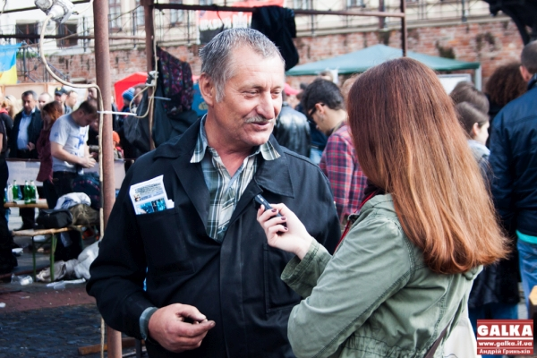

Туристичний
Івано-Франківськ
Туристичний
Івано-Франківськ
В Івано-Франківську триває XIV фестиваль ковальського мистецтва “Свято ковалів”. На дійство до Івано-Франківська з’їхалися кілька сотень представників ковальського мистецтва з десяти країн світу, зокрема, з Туреччини, Великобританії, Литви, Білорусі, Польщі, Франції. Вчора на площі Бастіону закипіла робота – учасники фестивалю взялись за виготовлення елементів Брами ковальських міст. Сьогодні ж попри дощову і мінливу погоду роботу продовжили.
“Галка” розпитала ковалів та відвідувачів фестивалю про їхні враження та чи не зіпсувала погода свята.
“Погода настрій підзіпсувала, – сміється пан Микола з Нетішина . Кросівки, шкарпетки мокрі, ноги намочив, але не зовсім настрій зіпсований. Зараз роблю підкову. Якщо чесно, я, хоч віком вже не молодий, але тільки почав вчитись на коваля. Подобається мені це. Я з дитинства мріяв про токарний станок, сверло і кузня. от і вчусь. Скільки тут нового і цікавого дізнався, що вам не передати”. Поблизу місця пана Миколи двоє братів Андрій і Юра вперше пробують свої сили у ковальстві.
“Ми приїхали з Рівного з татом. Ковальство прикольне. Трохи тяжко, але нормально. Цікаво спробувати і повчитись”, – каже Андрій. “Я вперше на такому фестивалі і мені дуже подобається. Круто, що проста людина може підійти і подивитися, як кується метал, бо це цікаво людям. Більше того, можна підійти і спробувати. Атмосфера дружня. Я навчаюсь на коваля. Чому обрала таку “нежіночу” професію? Чесно кажучи, я не можу відповісти логічно на це питання. Просто мені це подобається. Я не можу інакше”, – каже дівчина.